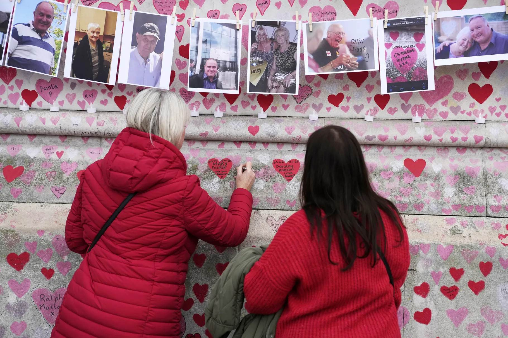
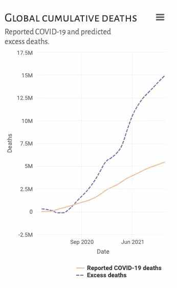

How many people have died from the Covid-19 crisis?
The virus itself killed millions, but pandemic disruptions led to nearly three times as many deaths.
By Umair Irfan May 5, 2022, 3:00pm EDT
Family members write a message to two sisters who died of Covid-19 on the National Covid Memorial wall in London, England, on March 29. Alastair Grant/AP
The World Health Organization (WHO) on Thursday released its estimate of global mortality from the Covid-19 pandemic: 14.9 million deaths, from January 1, 2020, to December 31, 2021.
That tally is the number of “excess deaths” compared to a baseline of expected deaths in a world without Covid-19. This number includes not just the people who died from the virus, but also those who passed away in the ensuing chaos as hospitals filled up and workplaces shut down.
It’s a stunning snapshot of the sweeping devastation the Covid-19 pandemic unleashed around the world, showing that the virus wreaked havoc far beyond the infections it caused. The WHO attributed about 5.4 million deaths to the virus itself.
Global deaths from the Covid-19 pandemic are far greater than those from just infections. World Health Organization
The burden of these deaths was not spread equally. India suffered the highest toll from the pandemic with nearly 4.7 million fatalities, about 10 times the country’s official estimates. India’s per capita excess fatality rate average for 2020-2021 — 171 per 100,000 per year — was roughly in the middle of the pack among countries. The highest per capita rate was in Peru at 437 per 100,000 per year. The US meanwhile saw 820,000 official deaths from Covid-19 by the end of 2021, but the WHO estimated an additional 110,000 fatalities over this time frame, with a per capita rate of 140 per 100,000 per year.
Within populations across the globe, older people faced the highest risks, with 82 percent of excess deaths among those older than 60.
Researchers at the WHO built their estimates on official reported deaths and used models to calculate them where direct tallies weren’t available. Their excess death results are a bit lower than some prior estimates. In March, the Institute for Health Metrics and Evaluation counted 18.2 million excess deaths in the same time frame. The Economist calculated excess deaths as high as 25 million.
What does this all mean for the Covid-19 pandemic?
For one thing, the wide gap between the official number of Covid-19 deaths and the estimates of excess deaths highlights how the pandemic has had devastating knock-on effects. Ignoring Covid-19 has proven deadly, but some of the interventions deployed have had immense costs too. Shutdowns of economies, schools, travel, routine medical care, and social functions created stress in societies. The pandemic led to an increase in suicides and deaths from excessive drinking, for example.
And counting deaths is not just an academic exercise. It’s an important measure of how well a country is handling the crisis and serves as a basis for preventing future casualties. “When we undercount, we miss targeting our interventions where and when they are most needed,” said Samira Asma, assistant director-general for data, analytics, and delivery at the WHO, during a press conference on Thursday. “We must hold ourselves and our policymakers accountable.”
The discrepancy between deaths specifically from Covid-19 and excess deaths during the pandemic shows how hard it is to keep track of the true extent of the crisis. With health care systems stressed by millions of infections, record-keeping often became a low priority. In some places, health metrics were poorly tracked to begin with, so reporting on deaths varies widely between countries, with some like India and China likely undercounting their fatalities by wide margins. Excess death estimates also reveal how some outbreaks were far more severe than previously realized and highlight hidden fractures in health care.
The timing of excess deaths throughout the pandemic shows, perhaps not surprisingly, that the situation is worst when transmission of the virus is high and vaccination rates are low. While protection against infection can wane, Covid-19 vaccines prevented millions of deaths.
In the current moment, it’s important to recognize that the pandemic is still not over. The United States has just passed more than 1 million deaths directly caused by Covid-19. The SARS-CoV-2 virus behind the disease is continuing to mutate in ways that make it more transmissible and better able to evade immune protection.
Some of the places that have avoided major Covid-19 outbreaks are getting hammered now. Cities like Hong Kong and Shanghai have seen huge spikes in cases and deaths from Covid-19 as recent waves of infections revealed that many of the older residents in these cities were not vaccinated. No one can afford to be complacent, and earlier success in containing the pandemic is no guarantee against future misery.
It’s also worth noting that death is the most severe outcome of Covid-19, but not the most likely result. The majority of people sickened by Covid-19 don’t die. However, their illnesses have social and economic consequences as they miss work or isolate from family. Not everyone who survives an infection makes a complete recovery, with a significant fraction facing long Covid and enduring health problems. The excess death toll of Covid-19 is massive, but so too is the excess suffering.
And while there is wide variation in how severely Covid-19 has afflicted different countries, with some relaxing precautions like wearing face masks, it remains a global threat. As long as the virus is spreading, it will mutate, increasing the chances of another dangerous variant emerging. Preventing this requires containing the disease wherever possible, particularly through closing vaccination gaps around the world.
“No country is safe until all countries are safe,” said Ibrahima Socé Fall, assistant director-general for emergency response at the WHO, during a press conference.
Will you support Vox’s explanatory journalism?
Millions turn to Vox to understand what’s happening in the news. Our mission has never been more vital than it is in this moment: to empower through understanding. Financial contributions from our readers are a critical part of supporting our resource-intensive work and help us keep our journalism free for all. Please consider making a contribution to Vox today.
In This Stream
Covid-19 vaccines: News and updates
How many people have died from the Covid-19 crisis?
How Hong Kong’s pandemic success story turned into a nightmare
More From Vox
When justice isn’t served, how do we find forgiveness?
How to forgive someone who isn’t sorry
Everyone wants forgiveness, but no one is being forgiven
The promise — and problem — of restorative justice
The impossible task of truth and reconciliation
The Latest
This is what we need to invent to fight climate change
By Umair Irfan


If Roe v. Wade falls, are LGBTQ rights next?
The owl did it, and other reasons true crime fans love
By Aja Romano
What police could find out about your illegal abortion
One of Multiverse of Madness’s 2 credits scenes is a huge
Abortion has been treated as a fringe issue by Democrats for
By Anna North
Most Read
One of Multiverse of Madness’s
Do Not Sell My Personal InfoLicensing FAQ
Press RoomEditorial Ethics and Guidelines
© 2022 Vox Media, LLC. All Rights Reserved